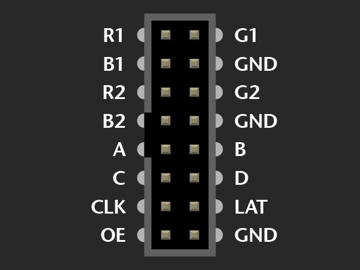
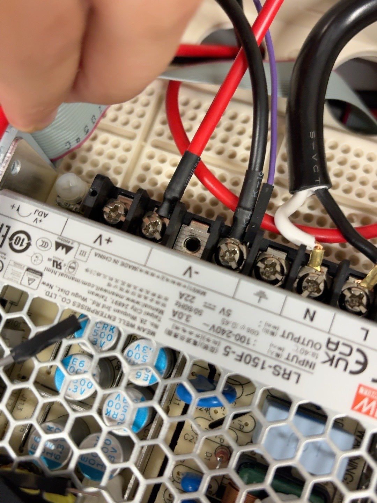
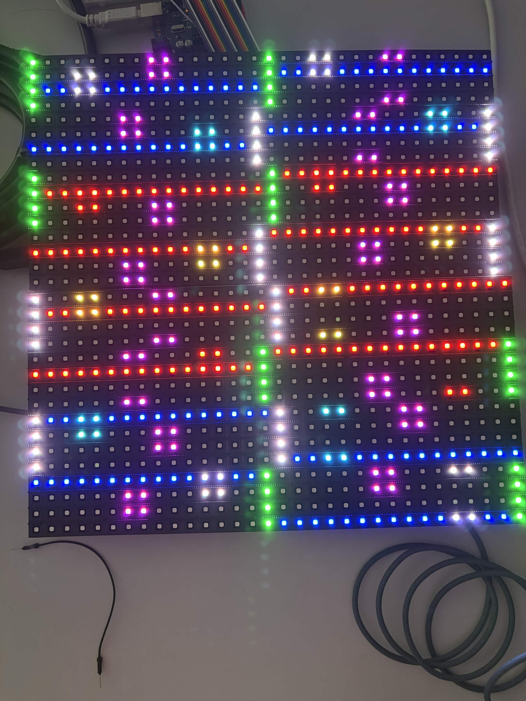
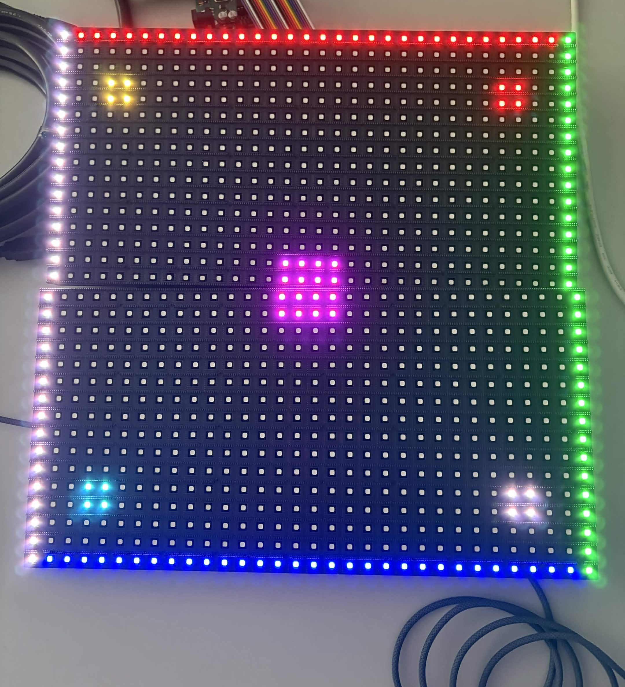

Arduino UnoからESP32へ移行して，HUB75 LEDパネルを光らせるまで
これまでArduino Uno R3で動かしていたHUB75接続のRGB LEDパネルを，ESP32へ載せ替えてみました．
ESP32でLEDパネルを光らせたい
Unoでも「空」や「満」は表示できていたのですが，画像を表示したり，Webから内容を変えたりすることを考えると，メモリが少し不安でした．
そこで，購入したESP32へ移行することにしました．Wi-Fiも使えて，メモリにも余裕がありそうです．
今回の目標は，いきなり文字を完成させることではありません．
- Unoで使っていたP10パネル用の表示方法をESP32へ移す
- ESP32へプログラムを書き込む
- 実際にLEDパネルが光る
この3つを確認することにしました．
今回の構成
使ったものです．
- ESP32-WROOM-32系のボード
- ①で使ったP10 RGB LEDパネル2枚
- HUB75リボンケーブル
- パネル用の外部5V電源
- USBケーブル
- Windows PC
- Arduino IDE
パネル同士の接続はUnoのときと同じです．接続順とパネルごとの向きについては，①の「2枚つなぐと，表示の順番が逆になる」にまとめています．今回は，マイコン側の配線をESP32に合わせていきます．
ESP32の実物を見ながらピンを決めた
AIに配線を教えてもらったのですが，最初はGPIO16と書かれていてよくわかりませんでした．手元のESP32基板を見てみるとD16という表記だったので合わせてもらいました．
なので基板上にD番号が書かれていて分かりやすいピンだけを使うことにしました．
最終的な配線は以下です．
| HUB75信号 | ESP32 | 用途 |
|---|---|---|
| R1 | D32 | 上側データの赤 |
| G1 | D33 | 上側データの緑 |
| B1 | D25 | 上側データの青 |
| R2 | D26 | 下側データの赤 |
| G2 | D27 | 下側データの緑 |
| B2 | D14 | 下側データの青 |
| CLK | D21 | クロック |
| LAT | D19 | ラッチ |
| OE | D18 | 出力のON/OFF |
| A | D23 | 行選択 |
| B | D22 | 行選択 |
| C | GND | 今回は使わない |
| D | GND | 今回は使わない |
| GND | GND | パネルと電源で共通 |

※HUB75配線画像'https://learn.adafruit.com/32x16-32x32-rgb-led-matrix/new-wiring'様より引用
電源について
LEDパネルはESP32から給電していません．パネルには外部の5V電源を使いました．
外部電源 +5V → LEDパネルの5V
外部電源 V- → LEDパネルのGND
外部電源 V- → ESP32のGND
大事なのは，外部電源，LEDパネル，ESP32のGNDを共通にすることです．GNDが共通でないと，ESP32が出している信号をパネル側で正しく判断できません．
今回はESP32の3.3V信号をそのままつないで点灯しました．ただし，安定して動かすなら74AHCT245などを使って5Vへレベル変換した方がよさそうです．
Unoのプログラムをそのまま使えなかった
①で確認した走査方法と座標変換は，引き続き使います．ただし，Uno版ではATmega328Pのポートレジスタを直接操作していたため，プログラムをそのままESP32へ書き込むことはできませんでした．
UnoにはUnoのGPIOの動かし方がありますが，ESP32にはESP32のGPIOの動かし方があります．そのため，表示用のフレームバッファやP10用の座標変換は残しつつ，信号を出す部分だけESP32用に変更しました．
ESP32では，RGB，CLK，LAT，OE，A，BをGPIOから繰り返し制御して，画面を走査しています．
移植後の確認には，①で使った色分けの座標テストを使いました．Unoで確認した表示を基準にして，ESP32でも同じ位置と色で表示できるかを確かめます．
ESP32へ書き込む
Arduino IDEにESP32用のボード設定を入れて，ESP32 Dev Moduleを選びました．
表示テスト，「空」，「満」の3つをESP32用にコンパイルして，書き込みました．ESP32はWindows上でCH340のUSBシリアルとして認識され，COM8になっていました．
しかし，配線を終えて書き込もうとしたとき，COM8が消えました．
コードの問題かと思いましたが，実際はPCがESP32をUSBシリアル機器として認識していない状態でした．
このときは，
- ESP32のUSBケーブルを抜く
- PCへ直接挿し直す
- ESP32のPWRランプを見る
- Windowsに
USB-SERIAL CH340 (COM8)が出るか確認する
という順番で確認しました．
挿し直すとCOM8が戻りました．原因はブラウザのWeb Serialがポートを開いていたことでした．書き込みできないので要注意．以後気を付けます．
最初にLEDが光った
COM8が戻った後，座標テストを書き込みました．
コンパイル成功，書き込み成功，ハッシュ検証成功，ESP32の再起動まではログで確認できました．
よっしゃ光った！ぐちゃぐちゃだけど．

この時点で，電源，共通GND，HUB75の信号，P10用の走査，ESP32への書き込みが動いていることを確認できました．
ただし，最初の表示はまだ完成ではありませんでした．線が本来と違う位置に出たり，中央にあるはずの紫の四角が分かれたりしていました．
まあ，最終的にはうまく光らせれたのでOKです．

まとめ
UnoからESP32への移行は，配線を差し替えるだけではできませんでしたがうまくいった方だと思います．
Uno固有のGPIO操作をESP32用に変更して，実物の基板を見ながらピンを決め，外部5V電源と共通GNDを確認して，最初に座標テストを書き込むことを行いました．
次は，座標テストで分かった向きやずれを補正して，「空」「満」「混」などの文字を正しい向きで表示できるようにしていきます．
ばいちゃ！